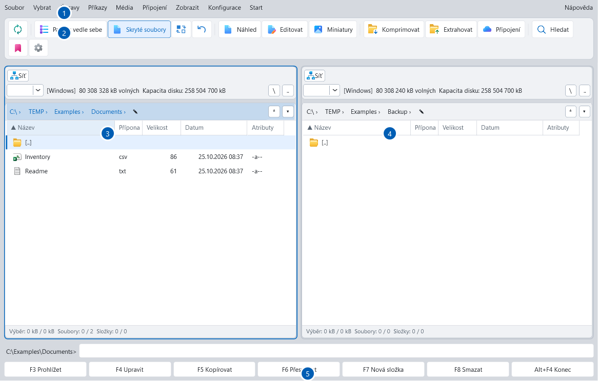

Dva panely. Jeden přehled.
Pracujte vedle sebe, nad sebou nebo v jednom panelu. Karty, uložené pohledy a pracovní prostory udrží vaše složky po ruce.
Od běžných složek přes síťové disky až po cloud. Mějte své soubory po ruce v promyšleném prostředí se dvěma panely.
 File Compass
File CompassZnámé prostředí klasického správce souborů. Nástroje pro všechno, co dnes v souborech řešíte.
Pracujte vedle sebe, nad sebou nebo v jednom panelu. Karty, uložené pohledy a pracovní prostory udrží vaše složky po ruce.
Kopírujte a přesouvejte s volbou řešení konfliktů, frontou na pozadí a volitelným ověřením SHA-256.
Prohlížejte obrázky, dokumenty, Markdown i zdrojový kód. Najděte správný soubor ještě před otevřením další aplikace.
Procházejte a vytvářejte archivy, rozbalujte soubory a pracujte s dělenými svazky přímo mezi svými složkami.
Hromadně přejmenujte soubory, hledejte v metadatech, odhalte duplicity a porovnejte soubory nebo složky.
Zkoumejte velikosti složek v interaktivních grafech, porovnávejte uložené analýzy a zobrazte SMART diagnostiku disků.
Přecházejte mezi počítačem, síťovými servery a vlastními cloudovými účty. Pracujte ve dvou panelech všude, kam vás práce zavede.
Cloudová připojení jsou volitelná. Přihlašujete se vlastním účtem. Ověření Google OAuth zatím není dokončeno.
Jak zacházíme s vašimi daty →
Skutečný snímek aplikace z uživatelské příručky. Kliknutím jej zvětšíte.
Pracovní prostředí, které si přizpůsobíte. Od uspořádání panelů a klávesových zkratek až po vzhled a jazyk.
Vyberte si balíček podle toho, jak pracujete.
File Compass je nyní ve vývoji. Odkazy se zde objeví, jakmile budou veřejné balíčky připravené.

Za File Compass stojí Jan Rathouský a značka Rathousky.pro. Správce souborů pro Windows vzniká s důrazem na přehled a přímou kontrolu nad vašimi soubory.
Máte otázku nebo nápad? Napište mi.
Napsat Janovi ↗